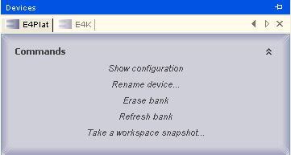
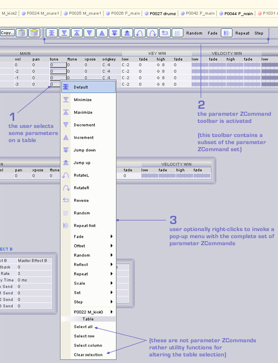
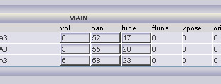
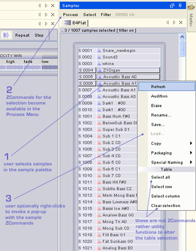
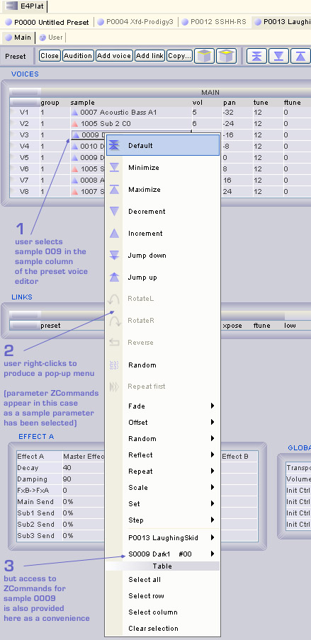
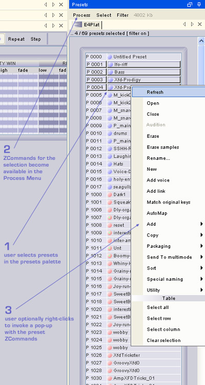
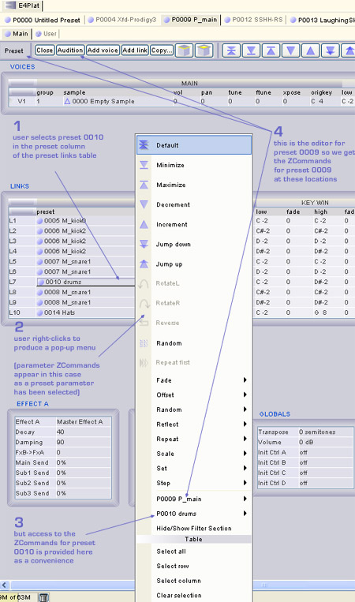
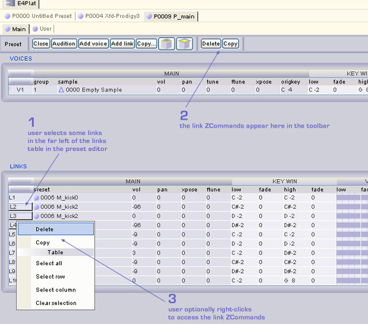
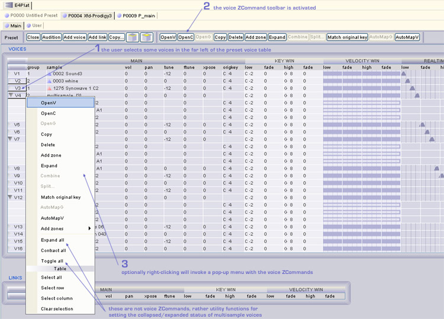
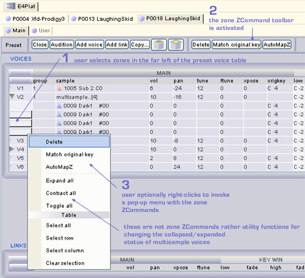

Device related ZCommands are executed from the device palette.

Parameter ZCommands are executed from toolbars, pop-up menus or keyboard shortcuts.

The parameter ZCommand toolbar is the default toolbar in a preset editor and will be activated if there are parameters selected inside the editor. The parameter toolbar may be replaced by a voice, link or zone toolbar if one of those types forms the current selection.
Voice editors only offer parameter selections so you will always see a parameter toolbar, though it may be greyed out (inactive) if there is currently no selection.
Preset and voice editors for flash presets are read-only so you will never see a parameter toolbar even if there are parameters selected on a table. The reason for this is that currently all parameter ZCommands require editable parameters to operate on - though this may change in the future as read-only parameter commands are introduced.
Targets derived from a selection are passed to the ZCommand left-to-right and top-to-bottom.
Taking the following graphic as an example, an invoked parameter ZCommand will receive the table selection as targets in the
following order:
0, 52, 17, 3, 55, 20, 6, 58, 23

Normalization
The values in the previous example are actually the result of applying parameter_StepFromFirst. This particular command takes the first value and applies it incrementally throughout the selection - so the second value in the selection is set to the first value + 1, the third is the first value + 2, and so on.. But looking at the output values we don't immediately see that pattern. The reason for this lies in the fact that the selection contains more than one parameter type. Each parameter type has its own distinct value space (a range of minimum to maximum values).
Volume runs form -96 .. +10 (107 values)
Pan ranges form -64 .. +63 (128 values)
Tune ranges from -72 .. +24 (97 values)
If the first value of the selection in the previous example was a volume value of -96 we would be unable to apply a Pan value of -95 (first value +1) as the second output value from the parameter_StepUpFromFirst ZCommand.
To handle this situation parameter ZCommands first normalize all the parameters in the selection prior to processing.
Each parameter of the selection is mapped to fractional value in the range 0..1 and this value is derived from its current value
expressed as a fraction of the parameters total range.
The normalization process enables parameters in different value spaces to be compatible with each other during processing.
Once the ZCommand has completed, the output normalized values are remapped back into the appropiate value space.
Guideline: If you are using a parameter ZCommand that modifies values in a selection based on other values in the selection it
generally makes most sense to apply those type of ZCommands to parameters of the same type e.g all the parameters in particular column of a table.
The ability to apply commands across multiple parameter types through normalization is provided for maximum flexibility.






